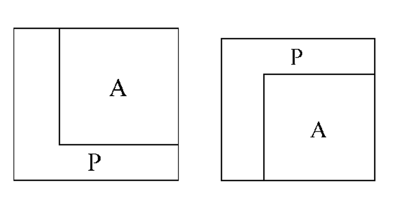
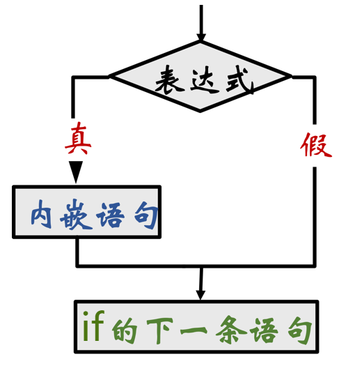
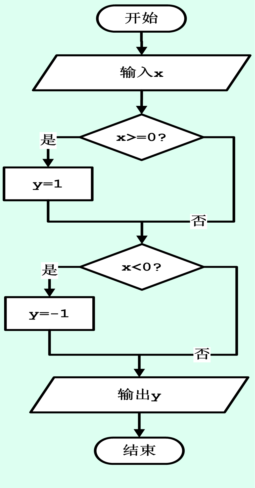
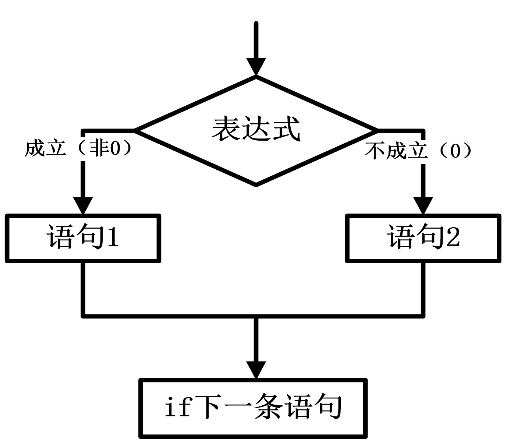
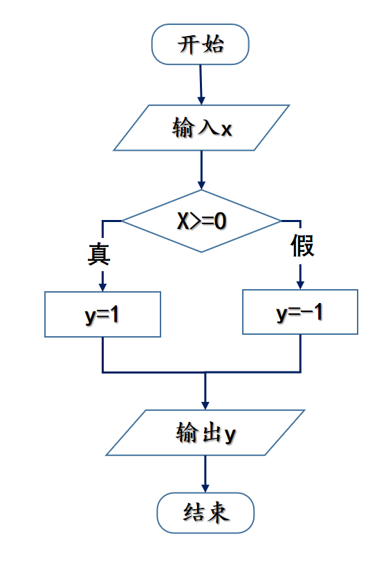
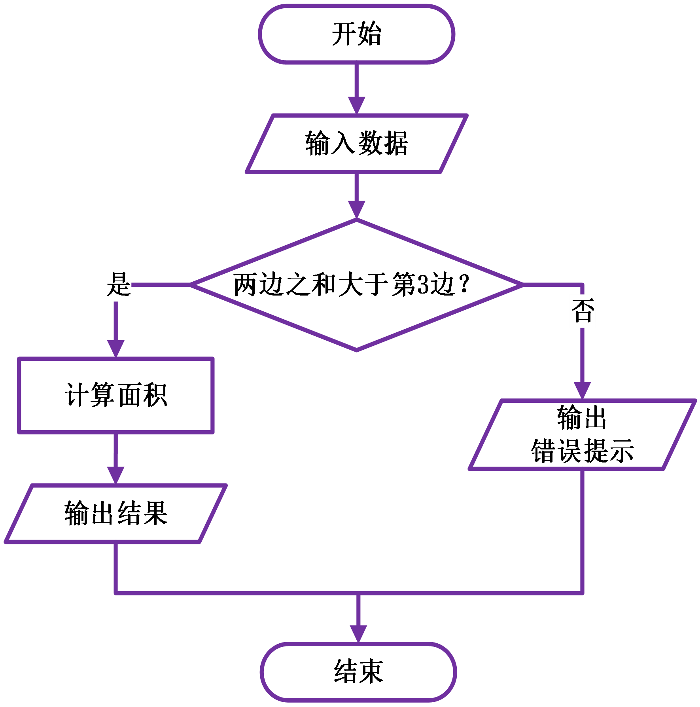

武汉理工大学 人工智能学院
C 程序设计基础
第 3 章 选择结构（上）
主讲：孙 骏
本章结构与目标
①if 单/双分支
基本条件判断
（本次课）
②控制运算符
关系、逻辑、条件运算符
构造判断条件
③多分支语句
if 嵌套、多分支 if、switch
本次课学习目标
- ① 控制结构理解顺序、选择、循环三种基本结构，能看懂流程图
- ② 单分支 if掌握语法格式，理解“条件后只能跟一条语句”的限制
- ③ 复合语句学会用
{ }把多条语句变成一个整体 - ④ 双分支 if掌握
if…else语法，理解二选一的执行流程
案例引入：计算三角形面积
问题
输入三角形的三条边长 a, b, c，计算并输出三角形的面积。
数学公式（海伦公式）
半周长：\(s = \frac{a + b + c}{2}\)
面积：\(area = \sqrt{s(s-a)(s-b)(s-c)}\)
#include <stdio.h> #include <math.h> int main() { float a, b, c, s, area; scanf("%f,%f,%f", &a, &b, &c); s = (a + b + c) / 2; area = sqrt(s * (s-a) * (s-b) * (s-c)); printf("area=%f\n", area); return 0; }
运行测试
输入：4,5,6
输出：area=9.921567
输入：1,2,4
输出：area=-1.#IND00
发现问题
当输入的三条边不能构成三角形时（如 1,2,4），程序依然会计算，导致根号下出现负数，结果异常！
怎么解决这个问题？
思路
在执行计算之前，先判断一下：这三条边能不能构成三角形？
✅如果能构成三角形
满足条件：a+b>c && a+c>b && b+c>a
则执行计算面积并输出的操作。
❌如果不能构成
直接给出错误提示（如 Data error!），
不进行计算。
这就要用到“选择结构”
程序不再是一味地从头执行到尾，而是根据条件是否成立，决定走哪条路。
3.1 基本控制结构
| 结构名称 | 执行特点 | 流程图 |
|---|---|---|
| 顺序结构 | 语句按书写顺序逐条执行，每条语句都执行一次。 |
|
| 选择结构 | 根据条件 P 的值，在两条（或多条）路径中选择一条执行。 |
|
| 循环结构 | 条件 P 成立时反复执行语句 A，直到条件不成立。 |
 |
要点三种基本结构可以组合出任意复杂程度的程序；
3.2 程序中的选择结构
需求某些情况下，语句的执行顺序依赖于输入数据或中间运算结果：
· 变量的值 · 表达式的值
· 变量的值 · 表达式的值
🔀选择结构
又称分支结构：程序运行到判断点时，根据条件在两条路径中二选一。
🧰C 的两种实现
· if 语句：单分支、双分支、嵌套、多分支
· switch 语句：等值多分支
判断框条件 P 成立（非 0，真）走一条路，不成立（0，假）走另一条路；两条路最终汇合，继续执行后面的语句。
3.3.1 if 语句（形式 1）：单分支
语法格式（Single selection）
if( 表达式 )
内嵌语句;
执行流程与语法说明
- 计算表达式的值：非 0（真）执行内嵌语句，0（假）跳过
- 内嵌语句：只能是一条语句，多条语句必须用
{ }构成复合语句 - 执行完后，接着执行 if 的下一条语句
口诀if 只管紧跟着的那一条语句。
流程图（请插入图片）
[传统流程图]

[N-S 流程图]
重点：条件后只能跟一条语句
核心规则
如果需要执行多条语句，必须用
if(表达式) 后面只能跟一条语句；如果需要执行多条语句，必须用
{ } 把它们包成一条复合语句。❌ 错误写法
if(a>b) t = a; a = b; // 不受 if 控制！ b = t; // 不受 if 控制！
✅ 正确写法
if(a>b){
t = a;
a = b;
b = t;
}建议即使只有一条语句，养成加
{ } 的习惯，能有效避免后续修改时出错。例：用单分支实现分段取值
题目从键盘输入一个数 x：若 x ≥ 0，则 y = 1；若 x < 0，则 y = −1。
#include <stdio.h> int main(){ float x; int y; printf("x="); scanf("%f", &x); if (x>=0) y = 1; if (x<0) y = -1; printf("%f,%d\n", x, y); return 0; }
x=-3.458
-3.450000,-1

分析两个 if 是顺序关系，互不干涉。条件互补，只有一个成立。
习题 1：if 语句的执行结果
题目当
a=1, b=2, c=3 时，执行语句 if(a>c) b=a; a=c; c=b; 后，变量 c 中的值为 ______。逐步分析
| 语句 | 判断 | 执行后 (a,b,c) |
|---|---|---|
| 初始状态 | — | (1, 2, 3) |
if(a>c) b=a; | 1 > 3 ？假 | 跳过，仍为 (1, 2, 3) |
a=c; | 无条件执行 | (3, 2, 3) |
c=b; | 无条件执行 | (3, 2, 2) |
答案c = 2 —— 只有
b=a; 受 if 控制，后面的两条语句都会无条件执行。习题 2：哪段代码能正确升序输出？
题目运行后按升序输出 a、b 的值（a ≤ b）：a > b 时交换 a、b；a ≤ b 时不做操作。
代码段 A
if(a>b) t = a; a = b; b = t; printf("%d,%d", a, b);
错只有
t=a; 受 if 控制，后两条无条件执行，a、b 永远被改。代码段 B
if(a>b){ t = a; a = b; b = t; } printf("%d,%d", a, b);
对三条语句用
{ } 组成复合语句，整体受 if 控制。答案B —— 这是“条件后只能跟一条语句”最典型的应用。
习题 3：多个 if 顺序执行的输出
#include <stdio.h> int main() { int x; scanf("%d", &x); if(x>10) x += 5; if(x>15) printf("%d", x-5); if(x>15) printf("%d\n", x+5); return 0; }
输入 12，输出结果？
| 语句 | 结果 |
|---|---|
if(x>10) x+=5; | 12 > 10 真 → x = 17 |
if(x>15) printf("%d",x-5); | 17 > 15 真 → 输出 12 |
if(x>15) printf("%d\n",x+5); | 17 > 15 真 → 输出 22 |
1222
要点三个
if 是顺序关系，不是多分支；前一个 if 改了 x，后一个 if 会看到新值。3.3.1 if 语句（形式 2）：双分支
语法格式（Double selection）
if( 表达式 ) 语句 1; else 语句 2;
执行流程与语法说明
- 表达式非 0（真）→ 执行语句 1
- 表达式为 0（假）→ 执行语句 2
- 两条语句必执行其一，执行完后接着执行下一条语句
if(x>y) x += 1; else y += 1; x += y; // 与 if 无关，必定执行
流程图（请插入图片）
[传统流程图]

[N-S 流程图]

例：双分支实现分段取值（对比单分支）
题目从键盘输入一个数 x：若 x ≥ 0，则 y = 1；若 x < 0，则 y = −1。
#include <stdio.h> int main(){ float x; int y; printf("x="); scanf("%f", &x); if (x>=0) y = 1; else y = -1; printf("%f,%d\n", x, y); return 0; }
x=-3.458
-3.450000,-1

对比单分支写法需要判断两次，双分支写法只判断一次，效率更高、语义更清晰。
习题 4：判断程序段是否有误
❌ 错误写法
if(x>y) x = y; y = x; // 独立语句 else x += 1; y += 1;
✅ 改正后的写法
if(x>y){ x = y; y = x; } else{ x += 1; y += 1; }
问题
if(x>y) 只管 x=y; 这一条；y=x; 是一条独立语句，因此 else 找不到与之配对的 if。
结论
原程序语法错误，编译器会直接报错。
正确做法：用
正确做法：用
{ } 把分支内的多条语句括起来，构成复合语句。
提示
如果分支内只有一条语句，
如果有多条语句，
{ } 可以省略；如果有多条语句，
{ } 绝对不能省。
综合案例：用双分支解决三角形面积问题
思路
先判断输入的三条边能否构成三角形：
a+b>c && a+c>b && b+c>a
#include <stdio.h> #include <math.h> int main(){ float a,b,c,s,area; printf("Side a="); scanf("%f",&a); printf("Side b="); scanf("%f",&b); printf("Side c="); scanf("%f",&c); if(a+b>c && a+c>b && b+c>a){ s = 0.5*(a+b+c); area = sqrt(s*(s-a)*(s-b)*(s-c)); printf("area=%6.2f\n", area); } else printf("Data error, reentry!"); return 0; }
[双分支解决三角形面积]

回顾
这些符号是怎么运算的？如何正确写出复杂的条件？
a+b>c && a+c>b && b+c>a 这里的 > 和 && 构成了判断条件。这些符号是怎么运算的？如何正确写出复杂的条件？
过渡
下一部分我们将详细讲解控制运算符 —— 关系运算符、逻辑运算符与条件运算符，让判断更加精准！
本讲小结（第一部分）
①基本控制结构
顺序、选择、循环。选择结构根据条件决定执行路径。
②单分支 if
if(表达式) 语句; 条件为真才执行。
③复合语句
条件后只能跟一条语句；多条语句必须用 { } 包起来。
④双分支 if
if…else 二选一，必执行其中一条分支。
下节课预告
条件里的
第二部分：控制运算符 —— 关系、逻辑与条件运算符。
>=、&&、|| 到底是怎么运算的？第二部分：控制运算符 —— 关系、逻辑与条件运算符。
谢 谢
下一部分：控制运算符
1 / 18
← → 翻页 · 空格下一页 · B 黑屏 · O 目录 · Esc 关闭